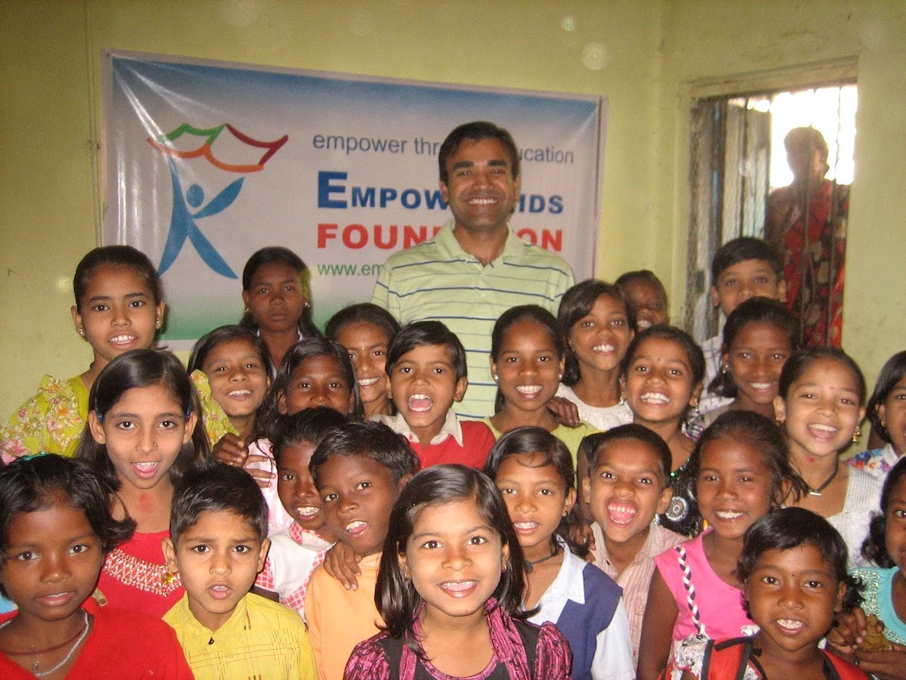

In rural India, many children are unable to receive a formal education due to economic and social barriers. As a native of India, Vivek Kumar witnessed - and in some cases experienced - these problems firsthand, and when he was achieved citizenship to the United States, he knew he had to give back to help lift others up.
He founded the EmpowerKids foundation to address these issues by providing educational resources to students who were traditionally left out of the system.
Vivek visiting one of the classes he helped create
Many of our students need extra support beyond what their communities can offer them. To fill this need, the EmpowerKids Foundation provides after-school tutoring to children ranging from ages 5-15. Our tutoring has a focus on teaching English through reading and writing, while also giving students a working understanding of computers and the internet.
One of our students in a tutoring lesson
Additionally, this program provides school supplies to any student who needs them, enabling every student, regardless of their economic situation, to take advantage of this opportunity. The program has reached over 400 students already, and with continued support for the organization it will reach many more.
One of our group studying sessions
Underserved children, due their economic status, do not have resources to complete their education up to 12th grade. In the modern age, this is a huge problem as automation continues to replace unskilled labor with highly specialized tasks. In an attempt to address this issue, the government started a program that offers children who meet certain academic criteria a free, government-sponsored education.
However, many students are unable to meet these standards on their own. Our program, with the help of volunteer engineering students from NIT Jamshedpur, gives students the skills they need to qualify for this program. In the past two years alone, 12 of our students have been accepted into this prestigious government program.
Students studying during of our residential bootcamp sessions
To better serve our students, the EmpowerKids Foundation built a school in Khalandi, India.
The beginnings of the construction of our school
The construction as since been completed, and the school now houses lessons for up to 60 students at a time.
A class of excited students
To expand opportunites for our students in Jharkhand and Odisha, we partnered with Sankalp, an organization who shares our goal of uplifting traditionally underserved children.
For more information about them, check out their website at sankalpnitjamshedpur.org.
In response to the COVID-19 pandemic placing great stress on our community, the Empowerkids Foundation worked with our teachers to deliver meals to families that were sheltering in place.
One of our teachers, Lalit Ji, making a food delivery
Support Us
If you liked what you read, consider supporting us to empower us to do even more.
100% of your donation will go directly to those who need it.